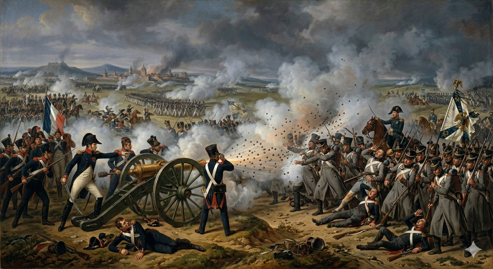
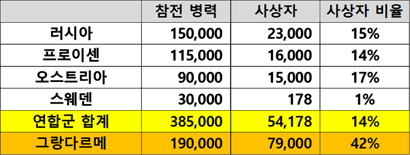
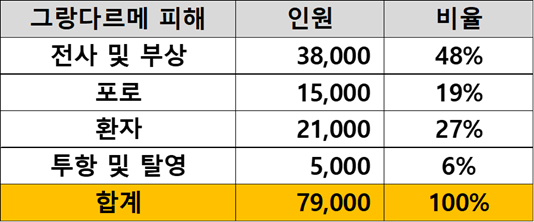
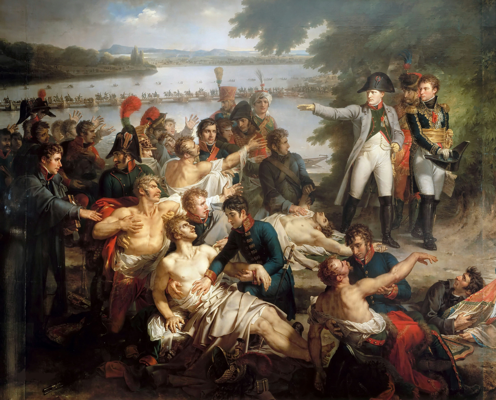
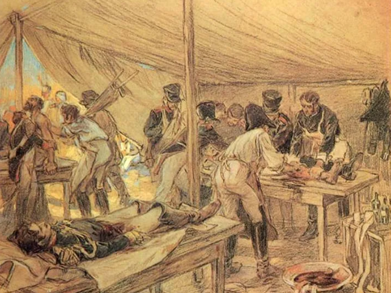
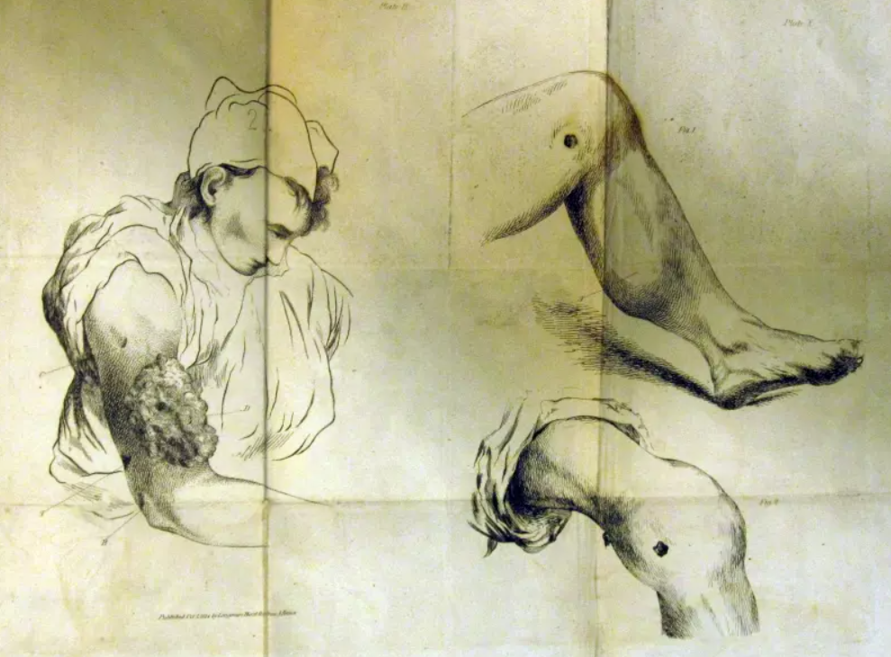
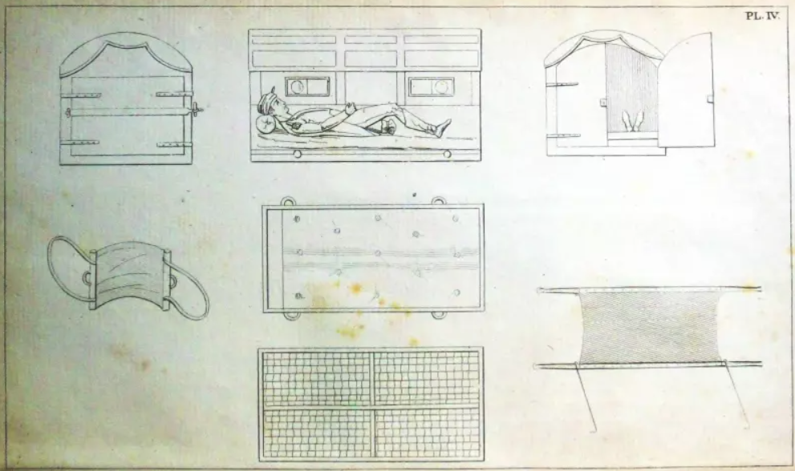
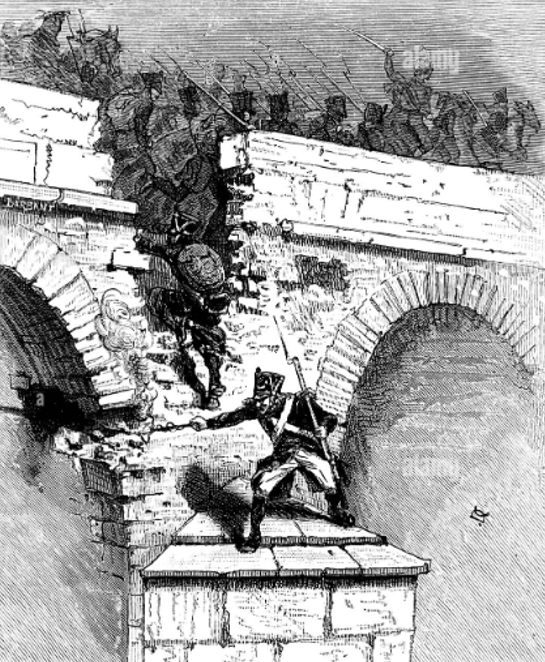

라이프치히 에필로그 (1) - 재기불능
게시: 2026-05-04T06:30:59+09:00
라이프치히 전투는 당시까지 유럽 역사에 알려진 모든 전투를 훌쩍 뛰어넘는 최대 규모의 전투였습니다. 나폴레옹 측 대략 19만, 연합군 측 대략 38만, 도합 거의 60만 대군이 하나의 도시 인근에 모여서 싸운 일은 적어도 유럽 역사에서는 존재하지 않던 일이었고, 전투에 실제로 참전한 인력만 따진다면 아시아에서도 매우 드문 대규모 전투였습니다. 그러다보니 쌍방의 사상자 수도 여태까지의 상식을 뛰어넘는 수준으로 발생했습니다. 연합군의 피해는 대략 5만4천이라고 보는 견해가 많습니다. 이는 물론 사망자와 부상자, 실종자 그리고 포로를 모두 합한 숫자입니다. 원래 연합군 중에서 가장 많은 병력을 참전시킨 것이 15만의 러시아였으므로, 피해도 그에 비례하여 가장 커서 약 2만3천의 사상자를 냈습니다. 11만5천을 동원했던 프로이센은 약 1만6천의 사상자를, 그리고 9만울 동원했던 오스트리아도 1만5천의 피해를 냈습니다. 라이프치히 전투를 치르며 그나이제나우는 특히 프로이센이 가장 치열한 전투에 투입되어 가장 많은 희생을 치렀다는 불만이 컸습니다. 가령 스토슈(Stosch)라는 이름의 참모의 기록에 따르면, 그나이제나우와 그의 참모진은 10월 19일, 사흘 전 요크의 프로이센 군단이 마르몽의 제6군단에 맞서 치열한 전투를 벌였던 뫼케른(Möckern)을 지나갔는데, 거기에 밀집 대형으로 빽빽히 몰려 쓰러진 프로이센군의 시체를 보며 그나이제나우는 '이번 승리는 독일인의 피로 값을 너무나 비싸게 치렀다'라며 눈물을 흘렸는데, 이 비정한 장군이 우는 것을 본 것은 그때가 처음이자 마지막이라고 했습니다. 또 그나이제나우는 베르나도트 휘하의 북부 방면군 소속 프로이센군, 즉 뷜로의 프로이센 군단이 베르나도트 휘하의 러시아군보다 언제나 더 최전선에 내몰린다고 불만을 가지고 있었습니다.

(스토슈의 기록에 따르면, 당시 그나이제나우가 뫼케른을 지날 때 프로이센군의 시체가 하도 빽빽이 쌓여 있어서 말을 탄 그의 일행은 한 줄로 지나가야 했다고 합닌다. 시체들이 그렇게 밀집 대형으로 쓰러진 것은 당시 밀집 보병 대오에 대해 대포에서 산탄(cannister shot)이나 포도탄(grape shot)을 쏘았기 때문일 것입니다. 이건 Google Gemini로 만든 그림입니다. "나폴레옹 전쟁 당시 프랑스군이 대포에서 cannister shot을 발사하여 프로이센군의 밀집 보병 대오가 큰 피해를 입는 모습을 David나 Lejeune 풍의 그림으로 그려줘"라고 하니까 이렇게 만들어주네요. 물론 그림 안에는 잘못된 점이 많습니다.) 그러나 그나이제나우의 그런 생각과는 달리, 실은 프로이센군의 피해는 비율로 따져보면 타연합군에 비해 오히려 약간 낮은 편이었습니다. 오히려 전투에 열의가 부족하고 느리기만 하다고 프로이센의 불만을 샀던 오스트리아군이 가장 큰 피해를 입었습니다. 또 같은 프로이센 군단들 중에서도 베르나도트 휘하에 있었던 뷜로의 프로이센 군단보다, 블뤼허 휘하의 프로이센 군단의 사상률이 더 컸으며, 압도적으로 가장 큰 피해를 입은 프로이센 군단은 보헤미아 방면군 소속의 클라이스 휘하의 군단이었습니다. 이렇게 그나이제나우와 블뤼허가 자신들이 가장 큰 희생을 치렀다고 피해망상을 가지게 된 가장 큰 이유는 역시나 얌체 베르나도트 때문이었습니다. 베르나도트가 애지중지하던 약 3만의 스웨덴군은 3개월 내내 거의 후방에서만 맴돌다가 10월 19일 넷째 날 전투에 들어서야 투입되었는데, 덕분에 9명의 장교와 169명의 병사들이라는 아담한 사상자를 냈습니다. 0.6%가 채 안 되는 사상률이었으니 스웨덴군의 병력 유지가 가장 큰 목표이던 베르나도트는 완벽한 성공을 거둔 셈이었습니다. 다만 이렇게 극도로 낮은 사상률은 당시 유럽의 군대 분위기에서는 매우 치욕적인 것이었고, 실제로 스웨덴군 장교들도 언제나 후방에 배치되는 것에 대해 부끄러워하고 있었습니다. 베르나도트가 그런 수치를 무릅쓰고서라도 스웨덴군을 보존하려했던 진짜 이유는 곧 드러나게 됩니다.

(1813년 10월 라이프치히 전투의 계산서입니다. 나폴레옹의 그랑다르메(Grande Armée)의 피해율이 모든 것을 말해줍니다. 그야말로 재기 불능의 참패였습니다.) 연합군이 총 14%의 사상률을 낸 것에 비해, 나폴레옹의 그랑다르메는 그야말로 괴멸적인 피해를 입어 사상률이 무려 42%에 달했습니다. 이 정도면 나폴레옹은 모스크바 철수 때에 준하는 수준의 피해를 입은 셈으로서, 그가 1813년 봄과 여름에 프랑스에서 새로 편성하여 작센으로 끌고 왔던 군대는 사실상 와해되었고, 나폴레옹에겐 재기의 기회가 완전히 사라진 것이었습니다. 그런데 여태까지 보셨던 전투 상황을 보면, 라이프치히 남북동쪽의 넓은 전선 어느 곳에서도 나폴레옹은 참패라는 것을 겪지 않았고, 주전선인 남부 전선에서는 오히려 약간 우세를 점하기까지 했습니다. 그런데 대체 왜 이렇게까지 그랑다르메의 피해가 커졌을까요? 혹시 작센과 뷔르템베르크 등 독일계 병력들의 전향 때문이었을까요?

(라이프치히 전투에서의 나폴레옹 병력의 손실 내용입니다. 물론 정확한 집계는 아니며, 기록자마다 차이가 매우 큽니다.)
나폴레옹은 라이프치히 패전의 원인을 작센군의 배신으로 치부하려 했지만, 사실 그들의 전향으로 인한 피해는 그다지 결정적인 것은 아니었습니다. 짐작하시다시피, 엘스터 다리의 폭파가 잘못되는 바람에 그런 참극이 빚어졌던 것입니다. 10월 16일부터 18일까지 3일 동안 격렬하게 싸우고도 그랑다르메의 피해는 연합군의 피해와 거의 비슷한 수준이었습니다. 문제의 19일날 라이프치히의 좁은 시내를 통해 후위대가 후퇴하며 시가전을 벌이는 과정에서 많은 사상자가 났고, 특히 다리가 잘못 폭파되면서 걷잡을 수 없는 혼란이 벌어지며 많은 병사들이 죽거나 항복해야 했습니다. 거기에, 시내에 버려두고 갈 수밖에 없었던 환자들까지 고스란히 병력 손실로 잡히면서 42%라는 엄청난 손실률이 나온 것입니다.

(이 그림은 1809년 5월, 나폴레옹의 첫 패배라고 하던 Aspern-Essling 전투 이후 로바우(Lobau) 섬으로 돌아온 나폴레옹과 부상병들의 모습입니다. 아스페른-에슬링 전투에 나폴레옹은 오스트리아군과 비슷한 비율인 25%의 손실을 입었으나, 포로와 부상병, 환자들을 대거 잃지는 않았기 때문에 상황을 수습하여 결국 바그람(Wagram) 전투에서 다시 싸워 승리할 수 있었습니다. 이 그림 속에는 나폴레옹의 유명한 군의관 라리(Dominique Jean Larrey)의 모습도 들어있습니다. 그림 중앙 약간 상당에, 터번을 쓴 루스탐 왼쪽으로 세번째 인물, 그러니까 나폴레옹을 향해 오른팔을 내민 부상병 바로 오른쪽에, 얼굴만 보여지는 똘똘해 보이는 인물이 바로 라리입니다.)

(이건 전투 이후의 야전 병원 천막 내부의 모습입니다만, 원래 당시 전쟁에서는 총이나 대포에 맞아 죽는 전사자보다 병들어 죽는 병사자가 더 많은 것이 정상이었습니다. 이기면 저런 환자들 중 상당수가 완치되어 병영으로 되돌아올 수 있었지만, 지는 경우 대개 야전 병원에 버려두고 가야 했으므로 고스란히 병력 손실로 이어졌습니다. 또, 패전한 적군이 두고 가는 환자들은 대부분 결국 사망하는 경우가 많았습니다. 아군 환자를 보살피고 먹이는 것도 어려운 상황에서, 패잔병 환자들은 식량 공급을 제대로 못 받아 굶는 경우가 많았고 그런 영양실조는 곧 건강 악화로 이어져 병세가 급속히 더 나빠졌기 때문입니다.)

(보통 영화나 소설 속에서 주인공은 부상을 입어도 팔이나 다리, 어깨 같은 곳을 다쳐서 붕대 감고 하루 이틀 정신 잃고 있으면 낫는 법입니다만, 실제 전장의 상황은 달랐습니다. 당시 의사들은 아직 병균이라는 개념 자체를 모르고 있었고, 수술 기구를 물에 끓여 소독할 생각도 못했습니다. 따라서 수술 이후 많은 병사들이 패혈증이나 괴저 등으로 죽었습니다. 이 그림들은 1814년 워털루 때 부상병을 치료했던 영국 의사 벨(Sir Charles Bell)이 그린 부상병들의 환부입니다.)

(연합군도 나폴레옹도 부상병들이나 환자의 치료와 회복에는 별 관심이 없었는데, 그나마 프랑스군의 사정이 좀 나았다고 하는 이유는 유명한 군의관 라리의 존재 덕분입니다. 그는 환자 분류법(triage)와 함께 앰뷸런스의 발명자로 유명한데, 이 그림은 라리가 고안한 앰뷸런스 마차의 내부를 보여주는 그림으로서, 라리가 1812년 출간한 “Mémoires de Chirurgie Militaire”(군사 외과 비망록)에 실린 것입니다.) 단순히 병력 손실의 숫자만 중요했던 것이 아닙니다. 10월 19일, 연합군은 28개의 군기 뿐만 아니라 325문의 대포, 900량의 탄약 수송차, 720톤의 화약, 4만 정의 머스켓 소총과 함께, 무려 36명의 프랑스 장군들을 포로로 잡았습니다. 거기에는 로리스통, 레이니에, 샤르팡티에 등이 포함되어 있었습니다. 이렇게 상실된 대포들과 장군들은 나폴레옹이 프랑스에 있는 모든 것을 긁어서 끌고 나온 것이었습니다. 당시 전투에서는 대포와 함께 전투 경험과 지식을 갖춘 지휘관이 승패에 큰 영향을 끼쳤다는 점에서, 이런 인적, 물적 손실은 이후 나폴레옹의 패망을 결정적으로 만들었습니다. 결국 엘스터 다리를 너무 빨리 폭파시켰던 라퐁텐 상병만 일을 제대로 했다면 나폴레옹은 라이프치히 전투 이후에도 다시 재기의 발판을 마련할 수 있었을까요? 글쎄요, 라이프치히에서의 철수가 제대로 이루어졌다면 나폴레옹의 병력 손실은 7만9천이 아니라 어쩌면 4만 정도로 줄어들었을 것이고, 수백 문의 대포와 탄약은 물론 포니아토프스키, 로리스통과 레이니에 등 많은 지휘관들도 잃지 않았을 것입니다. 그랬다면 나폴레옹은 여전히 15만 정도의 대군을 거느리고 있었으므로, 프랑스와 독일의 자연 경계선인 라인강까지 후퇴한 뒤에 프랑스를 굳게 지킬 수도 있었을 것입니다. 실제로 라이프치히 전투에서 대승을 거둔 직후에도, 연합군은 이 제6차 대불동맹전쟁의 최종 목표를 나폴레옹의 폐위 및 부르봉 왕가의 복귀에 두고 있지 않았습니다. 프리드리히 빌헬름과 알렉산드르는 나폴레옹을 더 강하게 응징해야 한다는 생각을 막연히 가지고 있었지만, 메테르니히가 조종하는 오스트리아는 나폴레옹을 완전히 몰락시킬 경우 유럽은 러시아의 독무대가 될 것이라는 두려움을 가지고 있었으므로 그냥 나폴레옹이 라인강을 넘어오지 못하도록 하는 선에서 전쟁을 마칠 생각이었습니다. 따라서, 엘스터 다리 폭파만 제대로 되었다면 나폴레옹에겐 재기할 기회가 분명히 있었습니다. 하지만, 정말 그 모든 것이 라퐁텐 상병의 책임이었을까요? 전혀 그렇지 않았습니다.

(엘스터 다리를 폭파하는 라퐁텐 상병의 모습이라는데, 물론 실제 모습은 이와는 달랐겠지요.) Source : The Life of Napoleon Bonaparte, by William Milligan Sloane Napoleon and the Struggle for Germany, by Leggiere, Michael V With Napoleon's Guns by Colonel Jean-Nicolas-Auguste Noël https://www.historyofwar.org/articles/battles_leipzig_19_october.html https://warhistory.org/@msw/article/leipzig-battle-of-the-nations https://www.encyclopedia.com/history/encyclopedias-almanacs-transcripts-and-maps/leipzig-battle-0 https://warfarehistorynetwork.com/article/death-knell-for-napoleons-empire/ https://www.napoleon-series.org/military-info/battles/leipzig/c_leipzigoob10.html http://napoleonistyka.atspace.com/Leipzig_battle_of_the_Nations.htm https://heritageblog.rcpsg.ac.uk/2015/06/09/medicine-and-surgery-at-the-battle-of-waterloo/ https://en.wikipedia.org/wiki/Battle_of_Aspern%E2%80%93Essling